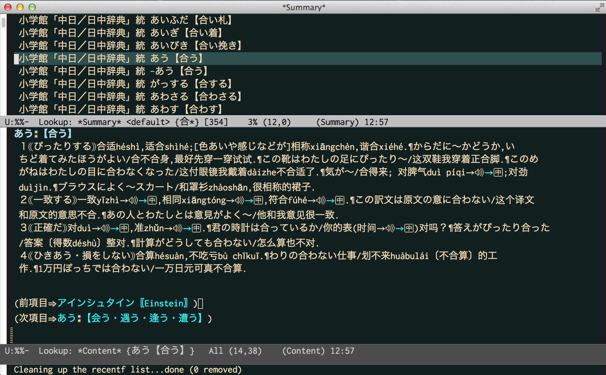

Table of Contents
Lookup は、かつて Sony が発売していた電子辞書 DD-CH10 CD-ROMに入っていた小学館の日中・中日辞書が利用できる。 この辞書は語彙・例文が充実していて、発売後１５年が経過した今でも人気が高い。
1 EBXA-C
DD-CH10 は、電子辞書規格 EBXA を中国語向けに拡張した、これ一台限りの特別規格 EBXA-C を採用している。 この辞書の閲覧には、EBXA-C 対応のパッチを当てた eblook を利用する。
2 漢字インデクサ
DD-CH10 の日中辞書は平仮名とピン音でしか検索できないが、EB漢字インデクサ を使用することで、漢字でも検索できるようになる。
3 ピン音フィルタ
Lookup の support-zhongri ファイルは、中国語の文字をピン音に直すクエリフィルタが組み込まれている。 このクエリフィルタが使用する関数 lookup-text-hanzi-to-pinyin は、漢字をピン音に変換する。 漢字は台湾漢字・中国漢字の両方を使用できる。複数の発音がある漢字は全ての組み合わせを返す。
(lookup-text-hanzi-to-pinyin "重慶") ⏎
("zhong4qing4" "chong2qing4")
4 設定
DD-CH10 のCD-ROMをコピーして、ndeb エージェントとしてディレクトリを指定する。
(setq lookup-search-agents
'(...
(ndeb "~/edicts/ZHONG_RI")
...))
